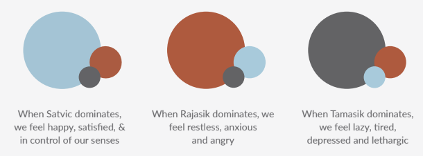
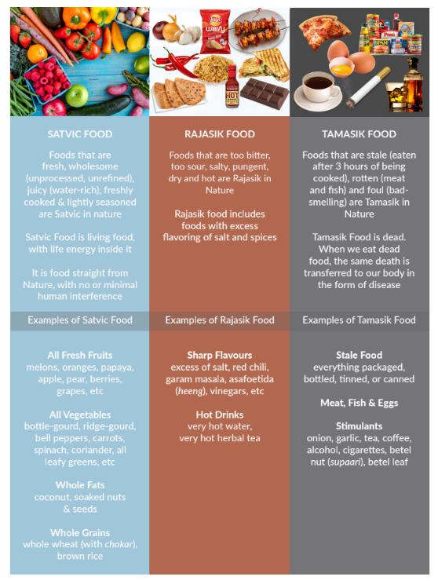
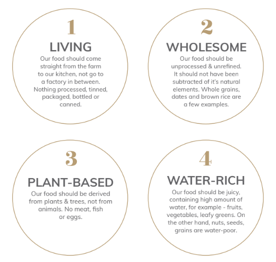

What does Satvik mean?
Lord Krishna, in the Bhagavad Gita states that all embodied souls are working under the control of 3 modes, or qualities of material nature -

The thoughts in our head, the activities we perform, the people we meet, the food we eat can all be classified as Satvic, Rajasik or Tamasik.
Each mode has different characteristics

One person can have multiple modes
Our modern lifestyle with its high levels of stress and toxins, leads to a life that fluctuates between Rajasik and Tamasik modes. To achieve happiness, we have to transcend from Tamasik and Rajasik to Satvic.
Our food can also be Satvik, Rajasik or Tamasik
To follow the Satvic diet, we need Satvic recipes and hence we have created this book. Satvic recipes are different from other so-called 'healthy recipes'. They follow strict Satvic food laws and are made especially for healing and achieving the maximum potential of this human body.
4 Satvik Food Principles
According to the Bhagavad Gita, our food should have four qualities, which can be represented by the abbreviation LWPW.